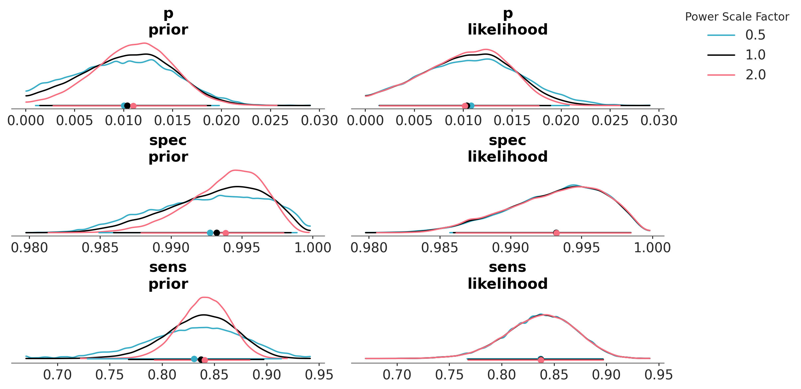
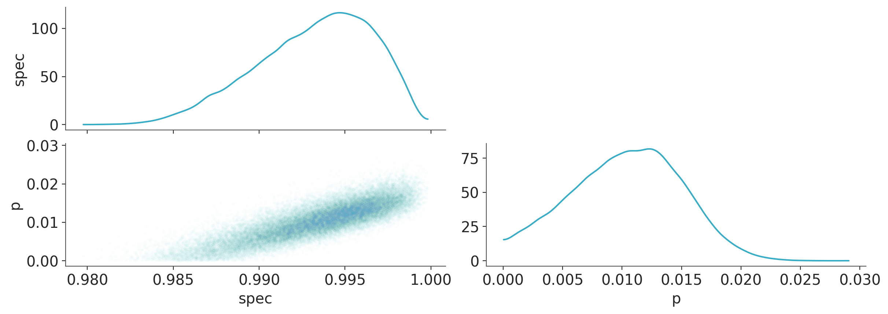
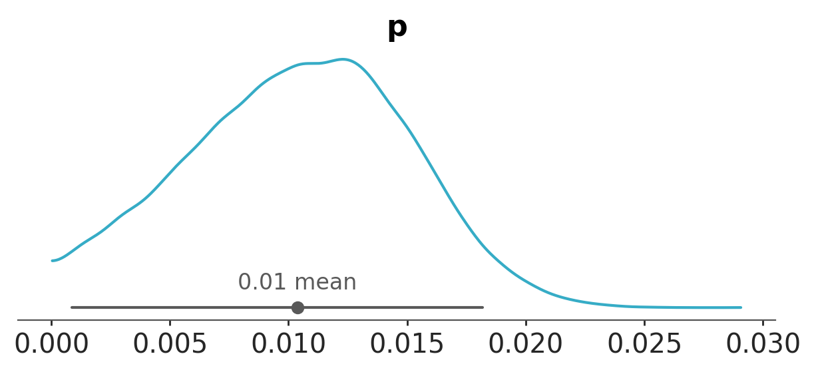
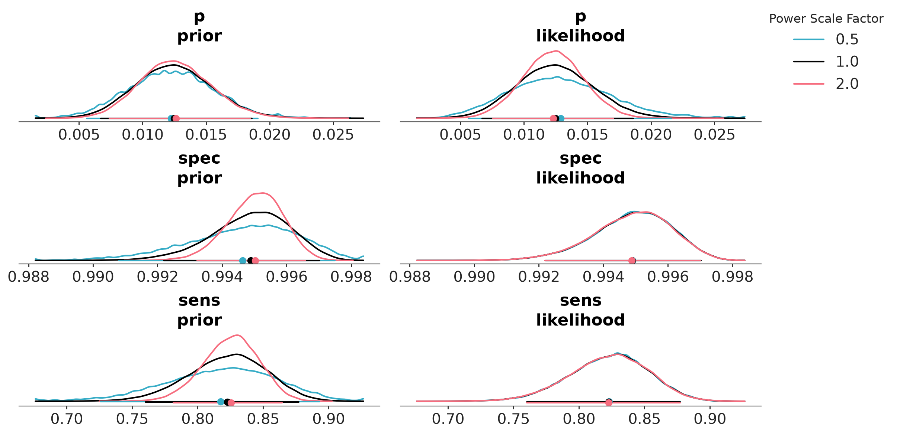
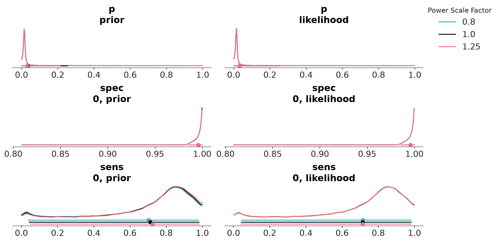
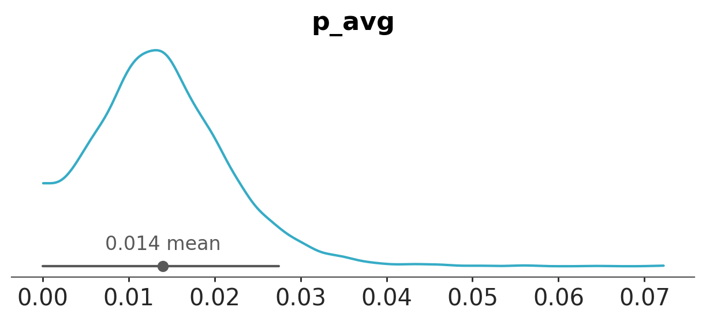
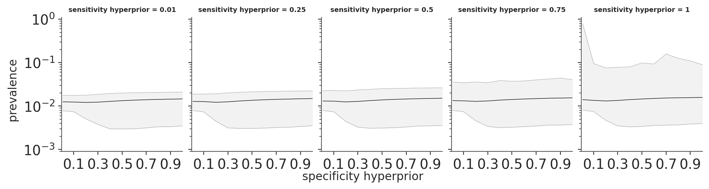

import sys
import warnings
sys.path.insert(0, "..")
import arviz as az
import matplotlib.pyplot as plt
import numpy as np
import pandas as pd
from cmdstanpy import CmdStanModel, disable_logging
from utils import print_stan
disable_logging()
warnings.filterwarnings("ignore")
az.style.use("arviz-variat")
az.rcParams["stats.ci_prob"] = 0.95
plt.rcParams["figure.dpi"] = 100
SEED = 1377Sensitivity and specificity in coronavirus testing
This notebook includes the code for the Bayesian Workflow book Chapter 19 Building up to a hierarchical model: Coronavirus testing.
1 Introduction
In early April, 2020, Bendavid et al. (2020a) recruited 3330 residents of Santa Clara County, California and tested them for SARS-CoV-2 antibodies. We re-analyze the data.
2 Simple model fit using pooled specificity and sensitivity
sc_model = CmdStanModel(stan_file="santa-clara.stan")
print_stan(sc_model)data {
int<lower = 0> y_sample, n_sample, y_spec, n_spec, y_sens, n_sens;
}
parameters {
real<lower=0, upper = 1> p, spec, sens;
}
transformed parameters {
real p_sample = p * sens + (1 - p) * (1 - spec);
}
model {
y_sample ~ binomial(n_sample, p_sample);
y_spec ~ binomial(n_spec, spec);
y_sens ~ binomial(n_sens, sens);
}
generated quantities {
real log_lik = binomial_lpmf(y_sample | n_sample, p_sample);
real lprior = binomial_lpmf(y_spec | n_spec, spec) +
binomial_lpmf(y_sens | n_sens, sens);
}Compute posterior with data from Bendavid et al. (2020a), 11 April 2020
fit_1 = sc_model.sample(
data=dict(
y_sample=50,
n_sample=3330,
y_spec=369 + 30,
n_spec=371 + 30,
y_sens=25 + 78,
n_sens=37 + 85,
),
iter_warmup=int(1e4),
iter_sampling=int(1e4),
seed=SEED,
show_progress=False,
)
idata_1 = az.from_cmdstanpy(fit_1, log_likelihood="log_lik")
idata_1["log_prior"] = idata_1["posterior"]["lprior"].to_dataset()
del idata_1["posterior"]["lprior"]az.summary(idata_1)| mean | sd | eti95_lb | eti95_ub | ess_bulk | ess_tail | r_hat | mcse_mean | mcse_sd | |
|---|---|---|---|---|---|---|---|---|---|
| p | 0.01038 | 0.00457 | 0.0014 | 0.019 | 15723 | 11348 | 1.00 | 3.6e-05 | 2.2e-05 |
| spec | 0.99322 | 0.00336 | 0.99 | 1 | 15249 | 15647 | 1.00 | 2.7e-05 | 1.8e-05 |
| sens | 0.8373 | 0.033 | 0.77 | 0.9 | 19698 | 18719 | 1.00 | 0.00023 | 0.00017 |
| p_sample | 0.0154 | 0.00213 | 0.012 | 0.02 | 43360 | 31424 | 1.00 | 1e-05 | 7.4e-06 |
Check prior-likelihood sensitivity using powerscaling
az.psense_summary(idata_1)We detected potential issues. For more information on how to interpret the results, please check
https://arviz-devs.github.io/EABM/Chapters/Sensitivity_checks.html#interpreting-sensitivity-diagnostics-summary
or read original paper https://doi.org/10.1007/s11222-023-10366-5| prior | likelihood | diagnosis | |
|---|---|---|---|
| p | 0.042 | 0.053 | ✓ |
| spec | 0.091 | 0.013 | potential strong prior / weak likelihood |
| sens | 0.110 | 0.001 | potential strong prior / weak likelihood |
| p_sample | 0.008 | 0.100 | ✓ |
az.plot_psense_dist(idata_1,
var_names=["~p_sample"],
alphas=[0.5, 2],
)
Inference for the population prevalence
az.plot_pair(idata_1,
var_names=["spec", "p"],
visuals={"scatter": {"alpha": 0.01,
"marker":".",}},
)
Use the shortest posterior interval, which makes more sense than a central interval because of the skewness of the posterior and the hard boundary at 0.
az.plot_dist(idata_1, var_names="p", ci_prob=0.95, ci_kind="hdi");
Compute posterior with data from Bendavid et al. (2020b), 27 April 2020
fit_2 = sc_model.sample(
data=dict(
y_sample=50,
n_sample=3330,
y_spec=3308,
n_spec=3324,
y_sens=130,
n_sens=157,
),
iter_warmup=int(1e4),
iter_sampling=int(1e4),
seed=SEED,
show_progress=False,
)
idata_2 = az.from_cmdstanpy(fit_2, log_likelihood="log_lik")
idata_2["log_prior"] = idata_2["posterior"]["lprior"].to_dataset()
del idata_2["posterior"]["lprior"]az.summary(idata_2, ci_prob=0.95, ci_kind="hdi", kind="stats")| mean | sd | hdi95_lb | hdi95_ub | |
|---|---|---|---|---|
| p | 0.012 | 0.003 | 0.0067 | 0.019 |
| spec | 0.99 | 0.0012 | 0.99 | 1 |
| sens | 0.82 | 0.03 | 0.76 | 0.88 |
| p_sample | 0.015 | 0.0021 | 0.011 | 0.02 |
Check prior-likelihood sensitivity using powerscaling
az.psense_summary(idata_2, var_names=["~p_sample"])We detected potential issues. For more information on how to interpret the results, please check
https://arviz-devs.github.io/EABM/Chapters/Sensitivity_checks.html#interpreting-sensitivity-diagnostics-summary
or read original paper https://doi.org/10.1007/s11222-023-10366-5| prior | likelihood | diagnosis | |
|---|---|---|---|
| p | 0.031 | 0.078 | ✓ |
| spec | 0.118 | 0.001 | potential strong prior / weak likelihood |
| sens | 0.101 | 0.001 | potential strong prior / weak likelihood |
az.plot_psense_dist(idata_2, var_names=["~p_sample"], alphas=[0.5, 2])
3 Hierarchical model for sensitivity and specificity
Hierarchical model that allows sensitivity and specificity to vary across studies.
sc_model_hierarchical = CmdStanModel(stan_file="santa-clara-hierarchical.stan")
print_stan(sc_model_hierarchical)data {
int y_sample;
int n_sample;
int J_spec;
int J_sens;
array[J_spec] int y_spec;
array[J_spec] int n_spec;
array[J_sens] int y_sens;
array[J_sens] int n_sens;
real logit_spec_prior_scale;
real logit_sens_prior_scale;
}
parameters {
real<lower=0, upper=1> p;
real mu_logit_spec;
real mu_logit_sens;
real<lower=0> sigma_logit_spec;
real<lower=0> sigma_logit_sens;
vector<offset=mu_logit_spec, multiplier=sigma_logit_spec>[J_spec] logit_spec;
vector<offset=mu_logit_sens, multiplier=sigma_logit_sens>[J_sens] logit_sens;
}
transformed parameters {
vector[J_spec] spec = inv_logit(logit_spec);
vector[J_sens] sens = inv_logit(logit_sens);
real p_sample = p * sens[1] + (1 - p) * (1 - spec[1]);
}
model {
y_sample ~ binomial(n_sample, p_sample);
y_spec ~ binomial(n_spec, spec);
y_sens ~ binomial(n_sens, sens);
logit_spec ~ normal(mu_logit_spec, sigma_logit_spec);
logit_sens ~ normal(mu_logit_sens, sigma_logit_sens);
sigma_logit_spec ~ normal(0, logit_spec_prior_scale);
sigma_logit_sens ~ normal(0, logit_sens_prior_scale);
mu_logit_spec ~ normal(4, 2); // weak prior on mean of dist of specificity
mu_logit_sens ~ normal(4, 2); // weak prior on mean of dist of sensitivity
}
generated quantities {
real log_lik = binomial_lpmf(y_sample | n_sample, p_sample);
real lprior = normal_lpdf(mu_logit_spec | 4, 2) +
normal_lpdf(mu_logit_sens | 4, 2);
}Compute posterior using data from Bendavid et al. (2020b) 27 April 2020
santaclara_data = dict(
y_sample=50,
n_sample=3330,
J_spec=14,
y_spec=[0, 368, 30, 70, 1102, 300, 311, 500, 198, 99, 29, 146, 105, 50],
n_spec=[0, 371, 30, 70, 1102, 300, 311, 500, 200, 99, 31, 150, 108, 52],
J_sens=4,
y_sens=[0, 78, 27, 25],
n_sens=[0, 85, 37, 35],
logit_spec_prior_scale=1,
logit_sens_prior_scale=1,
)
fit_3a = sc_model_hierarchical.sample(
data=santaclara_data,
iter_warmup=int(1e4),
iter_sampling=int(1e4),
adapt_delta=0.99,
seed=SEED,
show_progress=False,
)
idata_3a = az.from_cmdstanpy(fit_3a, log_likelihood="log_lik")
idata_3a["log_prior"] = idata_3a["posterior"]["lprior"].to_dataset()
del idata_3a["posterior"]["lprior"]var_names = ["p", "spec", "sens",
"mu_logit_spec", "mu_logit_sens",
"sigma_logit_spec", "sigma_logit_sens"]
az.summary(idata_3a,
var_names=var_names,
coords={"spec_dim_0": [0], "sens_dim_0": [0]},
ci_prob=0.95,
ci_kind="hdi",
kind="stats")| mean | sd | hdi95_lb | hdi95_ub | |
|---|---|---|---|---|
| p | 0.034 | 0.089 | 0.0021 | 0.25 |
| spec[0] | 1 | 0.0043 | 0.99 | 1 |
| sens[0] | 0.71 | 0.25 | 0.044 | 0.98 |
| mu_logit_spec | 5.6 | 0.59 | 4.5 | 6.9 |
| mu_logit_sens | 1.6 | 0.65 | 0.28 | 3 |
| sigma_logit_spec | 1.7 | 0.48 | 0.86 | 2.7 |
| sigma_logit_sens | 0.96 | 0.51 | 0.21 | 2.2 |
az.summary(idata_3a,
var_names=var_names,
coords={"spec_dim_0": [0], "sens_dim_0": [0]},
ci_prob=0.95,
ci_kind="hdi",
kind="stats")| mean | sd | hdi95_lb | hdi95_ub | |
|---|---|---|---|---|
| p | 0.034 | 0.089 | 0.0021 | 0.25 |
| spec[0] | 1 | 0.0043 | 0.99 | 1 |
| sens[0] | 0.71 | 0.25 | 0.044 | 0.98 |
| mu_logit_spec | 5.6 | 0.59 | 4.5 | 6.9 |
| mu_logit_sens | 1.6 | 0.65 | 0.28 | 3 |
| sigma_logit_spec | 1.7 | 0.48 | 0.86 | 2.7 |
| sigma_logit_sens | 0.96 | 0.51 | 0.21 | 2.2 |
Check prior-likelihood sensitivity using powerscaling
az.psense_summary(idata_3a, var_names=["p", "spec", "sens"])We detected potential issues. For more information on how to interpret the results, please check
https://arviz-devs.github.io/EABM/Chapters/Sensitivity_checks.html#interpreting-sensitivity-diagnostics-summary
or read original paper https://doi.org/10.1007/s11222-023-10366-5| prior | likelihood | diagnosis | |
|---|---|---|---|
| p | 0.116 | 0.011 | potential strong prior / weak likelihood |
| spec[0] | 0.022 | 0.019 | ✓ |
| spec[1] | 0.005 | 0.002 | ✓ |
| spec[2] | 0.022 | 0.004 | ✓ |
| spec[3] | 0.022 | 0.004 | ✓ |
| spec[4] | 0.022 | 0.005 | ✓ |
| spec[5] | 0.021 | 0.004 | ✓ |
| spec[6] | 0.023 | 0.003 | ✓ |
| spec[7] | 0.022 | 0.005 | ✓ |
| spec[8] | 0.005 | 0.002 | ✓ |
| spec[9] | 0.021 | 0.003 | ✓ |
| spec[10] | 0.002 | 0.003 | ✓ |
| spec[11] | 0.002 | 0.004 | ✓ |
| spec[12] | 0.001 | 0.001 | ✓ |
| spec[13] | 0.003 | 0.002 | ✓ |
| sens[0] | 0.062 | 0.002 | potential strong prior / weak likelihood |
| sens[1] | 0.013 | 0.002 | ✓ |
| sens[2] | 0.014 | 0.001 | ✓ |
| sens[3] | 0.013 | 0.001 | ✓ |
az.plot_psense_dist(
idata_3a,
var_names=["p", "spec", "sens"],
coords={"spec_dim_0": [0], "sens_dim_0": [0]},
)
4 Hierarchical model with stronger priors
Compute posterior using data from Bendavid et al. (2020b) 27 April 2020 and stronger priors
santaclara_data["logit_spec_prior_scale"] = 0.3
santaclara_data["logit_sens_prior_scale"] = 0.3MCMC gets sometimes stuck on minor mode, so we initialize with Pathfinder
pth_3b = sc_model_hierarchical.pathfinder(
data=santaclara_data,
max_lbfgs_iters=100,
num_paths=10,
)
fit_3b = sc_model_hierarchical.sample(
data=santaclara_data,
iter_warmup=int(1e4),
iter_sampling=int(1e4),
adapt_delta=0.99,
inits=pth_3b.create_inits(),
seed=SEED,
show_progress=False,
)
idata_3b = az.from_cmdstanpy(fit_3b, log_likelihood="log_lik")
idata_3b["log_prior"] = idata_3b["posterior"]["lprior"].to_dataset()
del idata_3b["posterior"]["lprior"]az.summary(idata_3b,
var_names=var_names,
coords={"spec_dim_0": [0], "sens_dim_0": [0]},
ci_prob=0.95,
ci_kind="hdi",
kind="stats")| mean | sd | hdi95_lb | hdi95_ub | |
|---|---|---|---|---|
| p | 0.012 | 0.0055 | 0.0017 | 0.023 |
| spec[0] | 0.99 | 0.0034 | 0.99 | 1 |
| sens[0] | 0.8 | 0.092 | 0.56 | 0.93 |
| mu_logit_spec | 5.2 | 0.34 | 4.6 | 5.9 |
| mu_logit_sens | 1.5 | 0.33 | 0.88 | 2.2 |
| sigma_logit_spec | 0.72 | 0.22 | 0.26 | 1.1 |
| sigma_logit_sens | 0.4 | 0.19 | 0.044 | 0.81 |
5 MRP model
MRP model allowing prevalence to vary by sex, ethnicity, age category, and zip code. Model is set up to use the ethnicity, age, and zip categories of Bendavid et al. (2020b)
sc_model_hierarchical_mrp = CmdStanModel(stan_file="santa-clara-hierarchical-mrp.stan")
print_stan(sc_model_hierarchical_mrp)data {
int<lower = 0> N; // number of tests in the sample (3330 for Santa Clara)
array[N] int<lower = 0, upper = 1> y; // 1 if positive, 0 if negative
vector<lower = 0, upper = 1>[N] male; // 0 if female, 1 if male
array[N] int<lower = 1, upper = 4> eth; // 1=white, 2=asian, 3=hispanic, 4=other
array[N] int<lower = 1, upper = 4> age; // 1=0-4, 2=5-18, 3=19-64, 4=65+
int<lower = 0> N_zip; // number of zip codes (58 in this case)
array[N] int<lower = 1, upper = N_zip> zip; // zip codes 1 through 58
vector[N_zip] x_zip; // predictors at the zip code level
int<lower = 0> J_spec;
array[J_spec] int<lower = 0> y_spec;
array[J_spec] int<lower = 0> n_spec;
int<lower = 0> J_sens;
array[J_sens] int<lower = 0> y_sens;
array[J_sens] int<lower = 0> n_sens;
int<lower = 0> J; // number of population cells, J = 2*4*4*58
vector<lower = 0>[J] N_pop; // population sizes for poststratification
real<lower = 0> coef_prior_scale;
real<lower = 0> logit_spec_prior_scale;
real<lower = 0> logit_sens_prior_scale;
}
parameters {
real mu_logit_spec;
real mu_logit_sens;
real<lower = 0> sigma_logit_spec;
real<lower = 0> sigma_logit_sens;
vector<offset = mu_logit_spec, multiplier = sigma_logit_spec>[J_spec] logit_spec;
vector<offset = mu_logit_sens, multiplier = sigma_logit_sens>[J_sens] logit_sens;
vector[3] b; // intercept, coef for male, and coef for x_zip
real<lower = 0> sigma_eth;
real<lower = 0> sigma_age;
real<lower = 0> sigma_zip;
vector<multiplier = sigma_eth>[4] a_eth; // varying intercepts for ethnicity
vector<multiplier = sigma_age>[4] a_age; // varying intercepts for age category
vector<multiplier = sigma_zip>[N_zip] a_zip; // varying intercepts for zip code
}
transformed parameters {
vector[J_spec] spec = inv_logit(logit_spec);
vector[J_sens] sens = inv_logit(logit_sens);
}
model {
vector[N] p = inv_logit(b[1]
+ b[2] * male
+ b[3] * x_zip[zip]
+ a_eth[eth]
+ a_age[age]
+ a_zip[zip]);
vector[N] p_sample = p * sens[1] + (1 - p) * (1 - spec[1]);
y ~ bernoulli(p_sample);
y_spec ~ binomial(n_spec, spec);
y_sens ~ binomial(n_sens, sens);
logit_spec ~ normal(mu_logit_spec, sigma_logit_spec);
logit_sens ~ normal(mu_logit_sens, sigma_logit_sens);
sigma_logit_spec ~ normal(0, logit_spec_prior_scale);
sigma_logit_sens ~ normal(0, logit_sens_prior_scale);
mu_logit_spec ~ normal(4, 2); // weak prior on mean of distribution of spec
mu_logit_sens ~ normal(4, 2); // weak prior on mean of distribution of sens
a_eth ~ normal(0, sigma_eth);
a_age ~ normal(0, sigma_age);
a_zip ~ normal(0, sigma_zip);
// prior on centered intercept
b[1] + b[2] * mean(male) + b[3] * mean(x_zip[zip]) ~ logistic(0, 1);
b[2] ~ normal(0, coef_prior_scale);
b[3] ~ normal(0, coef_prior_scale / sd(x_zip[zip])); // prior on scaled coef
sigma_eth ~ normal(0, coef_prior_scale);
sigma_age ~ normal(0, coef_prior_scale);
sigma_zip ~ normal(0, coef_prior_scale);
}
generated quantities {
real p_avg;
vector[J] p_pop; // population prevalence in the J poststratification cells
int count;
count = 1;
for (i_zip in 1:N_zip) {
for (i_age in 1:4) {
for (i_eth in 1:4) {
for (i_male in 0:1) {
p_pop[count] = inv_logit(b[1]
+ b[2] * i_male
+ b[3] * x_zip[i_zip]
+ a_eth[i_eth]
+ a_age[i_age]
+ a_zip[i_zip]);
count += 1;
}
}
}
}
p_avg = sum(N_pop .* p_pop) / sum(N_pop);
}To fit the model, we need individual-level data. These data are not publicly available, so just to get the program running, we take the existing 50 positive tests and assign them at random to the 3330 people.
rng = np.random.default_rng(SEED)
N = 3330
y = rng.permutation(np.repeat([0, 1], [3330 - 50, 50]))Here are the counts of each sex, ethnicity, and age from Bendavid et al. (2020b). We don’t have zip code distribution but we looked it up and there are 58 zip codes in Santa Clara County; for simplicity we assume all zip codes are equally likely. We then assign these traits to people at random. This is wrong–actually, these variable are correlated in various ways–but, again, now we have fake data we can use to fit the model.
male = rng.permutation(np.repeat([0, 1], [2101, 1229]))
eth = rng.permutation(np.repeat([1, 2, 3, 4], [2118, 623, 266, 306 + 17]))
age = rng.permutation(np.repeat([1, 2, 3, 4], [71, 550, 2542, 167]))
N_zip = 58
zip_codes = rng.integers(1, N_zip + 1, size=3330)Setting up the zip code level predictor. In this case we will use a random number with mean 50 and standard deviation 20. These are arbitrary numbers that we chose just to be able to test the centering and scaling in the model. In real life we might use %Latino or average income in the zip code
x_zip = rng.normal(50, 20, size=N_zip)Setting up the poststratification table. For simplicity we assume there are 1000 people in each cell in the county. Actually we’d want data from the Census.
J = 2 * 4 * 4 * N_zip
N_pop = np.full(J, 1000)Put together the data and fit the model
santaclara_mrp_data = dict(
N=N,
y=y.tolist(),
male=male.tolist(),
eth=eth.tolist(),
age=age.tolist(),
zip=zip_codes.tolist(),
N_zip=N_zip,
x_zip=x_zip.tolist(),
J_spec=14,
y_spec=[0, 368, 30, 70, 1102, 300, 311, 500, 198, 99, 29, 146, 105, 50],
n_spec=[0, 371, 30, 70, 1102, 300, 311, 500, 200, 99, 31, 150, 108, 52],
J_sens=4,
y_sens=[0, 78, 27, 25],
n_sens=[0, 85, 37, 35],
logit_spec_prior_scale=0.3,
logit_sens_prior_scale=0.3,
coef_prior_scale=0.5,
J=J,
N_pop=N_pop.tolist(),
)
fit_4 = sc_model_hierarchical_mrp.sample(
data=santaclara_mrp_data,
seed=SEED,
show_progress=False,
)
idata_4 = az.from_cmdstanpy(fit_4)Show inferences for some model parameters. In addition to p_avg, the population prevalence, we also look at the inferences for the first three poststratification cells just to check that everything makes sense
print_variables_mrp = [
"p_avg", "b", "a_age", "a_eth",
"sigma_eth", "sigma_age", "sigma_zip",
"mu_logit_spec", "sigma_logit_spec",
"mu_logit_sens", "sigma_logit_sens",
"p_pop",
]
az.summary(idata_4, var_names=print_variables_mrp,
coords={"p_pop_dim_0": [0, 1, 2]}, kind="stats")| mean | sd | eti95_lb | eti95_ub | |
|---|---|---|---|---|
| p_avg | 0.014 | 0.008 | 0.0012 | 0.031 |
| b[0] | -4.5 | 1.2 | -7.5 | -2.8 |
| b[1] | -0.088 | 0.38 | -0.84 | 0.66 |
| b[2] | -0.0041 | 0.014 | -0.03 | 0.025 |
| a_age[0] | -0.081 | 0.51 | -1.3 | 0.87 |
| a_age[1] | -0.22 | 0.48 | -1.4 | 0.53 |
| a_age[2] | -0.28 | 0.47 | -1.4 | 0.43 |
| a_age[3] | 0.31 | 0.51 | -0.52 | 1.5 |
| a_eth[0] | -0.098 | 0.34 | -0.9 | 0.5 |
| a_eth[1] | 0.095 | 0.35 | -0.58 | 0.87 |
| a_eth[2] | -0.083 | 0.36 | -0.95 | 0.56 |
| a_eth[3] | -0.081 | 0.38 | -1 | 0.56 |
| sigma_eth | 0.32 | 0.26 | 0.01 | 0.97 |
| sigma_age | 0.45 | 0.31 | 0.019 | 1.2 |
| sigma_zip | 0.44 | 0.29 | 0.022 | 1.1 |
| mu_logit_spec | 5.2 | 0.33 | 4.6 | 5.9 |
| sigma_logit_spec | 0.71 | 0.23 | 0.15 | 1.1 |
| mu_logit_sens | 1.5 | 0.33 | 0.88 | 2.2 |
| sigma_logit_sens | 0.4 | 0.19 | 0.05 | 0.81 |
| p_pop[0] | 0.011 | 0.011 | 0.00046 | 0.041 |
| p_pop[1] | 0.01 | 0.01 | 0.00047 | 0.038 |
| p_pop[2] | 0.014 | 0.015 | 0.00051 | 0.054 |
az.plot_dist(idata_4, var_names="p_avg", ci_prob=0.95, ci_kind="hdi");
6 Additional prior sensitivity analysis
pos_tests = [78, 27, 25]
tests = [85, 37, 35]
sens_df = pd.DataFrame(
{"pos_tests": pos_tests, "tests": tests,
"sample_sens": [p / t for p, t in zip(pos_tests, tests)]}
)
neg_tests = [368, 30, 70, 1102, 300, 311, 500, 198, 99, 29, 146, 105, 50]
tests = [371, 30, 70, 1102, 300, 311, 500, 200, 99, 31, 150, 108, 52]
spec_df = pd.DataFrame(
{"neg_tests": neg_tests, "tests": tests,
"sample_spec": [n / t for n, t in zip(neg_tests, tests)]}
)
pos_tests = [50]
tests = [3330]
unk_df = pd.DataFrame(
{"pos_tests": pos_tests, "tests": tests,
"sample_prev": [p / t for p, t in zip(pos_tests, tests)]}
)Stan model for prior sensitivity analysis
sens_model = CmdStanModel(stan_file="prior-sensitivity.stan")
print_stan(sens_model)data {
int<lower = 0> K_pos;
array[K_pos] int<lower = 0> N_pos;
array[K_pos] int<lower = 0> n_pos;
int<lower = 0> K_neg;
array[K_neg] int<lower = 0> N_neg;
array[K_neg] int<lower = 0> n_neg;
int<lower = 0> K_unk;
array[K_unk] int<lower = 0> N_unk;
array[K_unk] int<lower = 0> n_unk;
real<lower = 0> sigma_sigma_logit_sens;
real<lower = 0> sigma_sigma_logit_spec;
}
parameters {
real mu_logit_sens;
real mu_logit_spec;
real<lower = 0> sigma_logit_sens;
real<lower = 0> sigma_logit_spec;
vector<offset = mu_logit_sens,
multiplier = sigma_logit_sens>[K_pos] logit_sens;
vector<offset = mu_logit_spec,
multiplier = sigma_logit_spec>[K_neg] logit_spec;
vector<offset = mu_logit_sens,
multiplier = sigma_logit_sens>[K_unk] logit_sens_unk;
vector<offset = mu_logit_spec,
multiplier = sigma_logit_spec>[K_unk] logit_spec_unk;
real<lower = 0, upper = 1> pi;
}
transformed parameters {
vector[K_pos] sens = inv_logit(logit_sens);
vector[K_neg] spec = inv_logit(logit_spec);
vector[K_unk] sens_unk = inv_logit(logit_sens_unk);
vector[K_unk] spec_unk = inv_logit(logit_spec_unk);
}
model {
mu_logit_sens ~ normal(4, 2);
sigma_logit_sens ~ normal(0, sigma_sigma_logit_sens);
logit_sens ~ normal(mu_logit_sens, sigma_logit_sens);
n_pos ~ binomial_logit(N_pos, logit_sens);
mu_logit_spec ~ normal(4, 2);
sigma_logit_spec ~ normal(0, sigma_sigma_logit_spec);
logit_spec ~ normal(mu_logit_spec, sigma_logit_spec);
n_neg ~ binomial_logit(N_neg, logit_spec);
pi ~ uniform(0, 1);
logit_sens_unk ~ normal(mu_logit_sens, sigma_logit_sens);
logit_spec_unk ~ normal(mu_logit_spec, sigma_logit_spec);
n_unk ~ binomial(N_unk, pi * sens_unk + (1 - pi) * (1 - spec_unk));
}Data
data = dict(
K_pos=len(sens_df),
N_pos=sens_df["tests"].tolist(),
n_pos=sens_df["pos_tests"].tolist(),
K_neg=len(spec_df),
N_neg=spec_df["tests"].tolist(),
n_neg=spec_df["neg_tests"].tolist(),
K_unk=len(unk_df),
N_unk=unk_df["tests"].tolist(),
n_unk=unk_df["pos_tests"].tolist(),
)Empty data frame to store posterior intervals with different priors
ribbon_df = pd.DataFrame(
columns=["sigma_sens", "sigma_spec", "prev05", "prev50", "prev95"]
)Loop over different prior parameter values
sigma_senss = [0.01, 0.25, 0.5, 0.75, 1]
sigma_specss = [0.01, 0.1, 0.2, 0.3, 0.4, 0.5, 0.6, 0.7, 0.8, 0.9, 1.0]
for sigma_sens in sigma_senss:
for sigma_spec in sigma_specss:
data2 = {**data,
"sigma_sigma_logit_sens": sigma_sens,
"sigma_sigma_logit_spec": sigma_spec}
fit = sens_model.sample(
data=data2,
iter_warmup=int(5e4),
iter_sampling=int(5e4),
seed=1234,
adapt_delta=0.95,
show_progress=False,
)
pis = fit.stan_variable("pi")
ribbon_df = pd.concat(
[ribbon_df,
pd.DataFrame({
"sigma_sens": [f"sensitivity hyperprior = {sigma_sens}"],
"sigma_spec": [sigma_spec],
"prev05": [np.quantile(pis, 0.05)],
"prev50": [np.quantile(pis, 0.5)],
"prev95": [np.quantile(pis, 0.95)],
})],
ignore_index=True,
)sens_levels = [f"sensitivity hyperprior = {s}" for s in sigma_senss]
fig, axes = plt.subplots(1, len(sens_levels), figsize=(10, 2.5),
sharey=True, sharex=True)
for ax, level in zip(axes, sens_levels):
sub = ribbon_df[ribbon_df["sigma_sens"] == level].sort_values("sigma_spec")
x = sub["sigma_spec"].to_numpy(dtype=float)
y05 = sub["prev05"].to_numpy(dtype=float)
y50 = sub["prev50"].to_numpy(dtype=float)
y95 = sub["prev95"].to_numpy(dtype=float)
ax.fill_between(x, y05, y95, color="0.95")
ax.plot(x, y50, color="black", linewidth=0.5)
ax.plot(x, y05, color="0.5", linewidth=0.25)
ax.plot(x, y95, color="0.5", linewidth=0.25)
ax.set(yscale="log",
ylim=(0.0009, 1.1),
yticks=[0.001, 0.01, 0.1, 1],
xlim=(0, 1),
xticks=[0.1, 0.3, 0.5, 0.7, 0.9])
ax.set_title(level, fontsize=7)
fig.text(0.5, -0.03, "specificity hyperprior", ha="center")
fig.text(-0.02, 0.5, "prevalence", va="center", rotation=90);
References
Bendavid, Eran et al. 2020a. “COVID-19 Antibody Seroprevalence in Santa Clara County, California.” medrXiv Preprint medrXiv:10.1101/2020.04.14.20062463v1/.
——— et al. 2020b. “COVID-19 Antibody Seroprevalence in Santa Clara County, California, Version 2.” medrXiv Preprint medrXiv:10.1101/2020.04.14.20062463v2/.
Licenses
- Code © 2022–2025, Andrew Gelman and Aki Vehtari, licensed under BSD-3.
- Text © 2022–2025, Andrew Gelman and Aki Vehtari, licensed under CC-BY-NC 4.0.